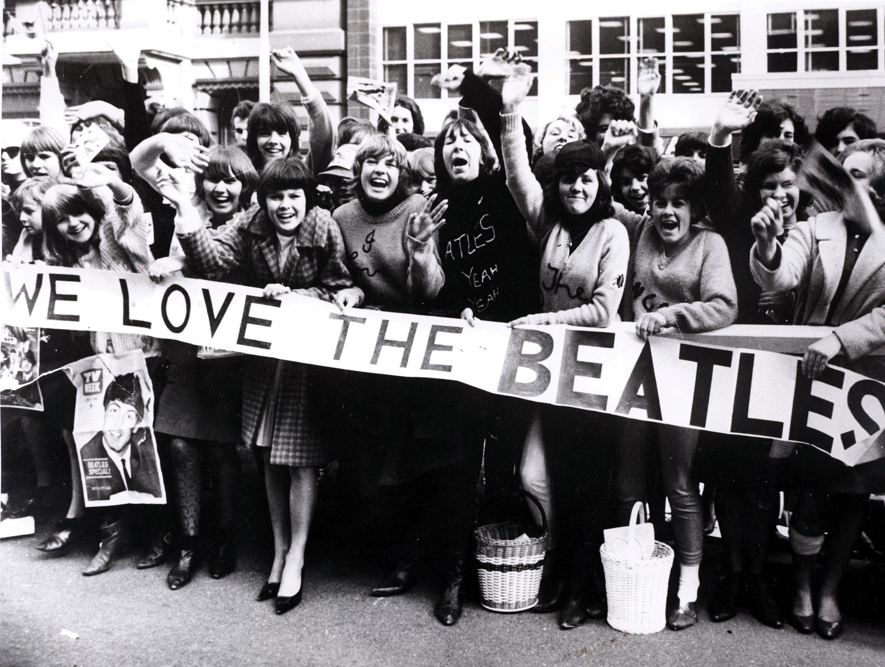

Figure 1.8
Source: Used with permission from Getty Images.
In 1850, an epidemic swept America—but instead of leaving victims sick with fever or flu, this was a rabid craze for the music of Swedish soprano Jenny Lind. American showman P. T. Barnum (who would later go on to found the circus we now know as Ringling Bros. and Barnum & Bailey Circus), a shrewd marketer and self-made millionaire, is credited with spreading “Lindomania” through a series of astute show-business moves. Barnum promised Lind an unprecedented thousand-dollar-a-night fee (the equivalent of close to $30,000 in today’s dollars) for her entire 93-performance tour of the United States. Ever the savvy self-promoter, Barnum turned this huge investment to his advantage, using it to drum up publicity—and it paid off. When the Swedish soprano’s ship docked on U.S. shores, she was greeted by 40,000 ardent fans; another 20,000 swarmed her hotel. Congress was adjourned during Lind’s visit to Washington, DC, where the National Theater had to be enlarged in order to accommodate her audiences. A town in California and an island in Canada were named in her honor. Enthusiasts could purchase Jenny Lind hats, chairs, boots, opera glasses, and even pianos.
A little more than a century later, a new craze transformed American teenagers into screaming, fainting Beatle-maniacs. When the British foursome touched down at Kennedy Airport in 1964, they were met by more than 3,000 frenzied fans. Their performance on The Ed Sullivan Show was seen by 73 million people, or 40 percent of the U.S. population. The crime rate that night dropped to its lowest level in 50 years. Beatlemania was at such a fever pitch that Life magazine cautioned that “A Beatle who ventures out unguarded into the streets runs the very real peril of being dismembered or crushed to death by his fans.”Barbara Ehrenreich, Elizabeth Hess, and Gloria Jacobs, “Beatlemania: Girls Just Want to Have Fun,” In The Adoring Audience: Fan Culture and Popular Media, ed. Lisa A. Lewis (New York: Routledge, 1992). The BBC helpfully pointed out that there was plenty of paraphrenalia for true fans to spend their money on: “T-shirts, sweat shirts, turtle-neck sweaters, tight-legged trousers, night shirts, scarves, and jewellery inspired by the Beatles” were all available, as were Beatles-style moptop wigs.
In the 21st century, rabid fans could actually help decide the next pop stars through the reality television program American Idol. Derived from a British show, American Idol hit the airwaves in 2002 and became the only television program ever to earn the top spot in the Neilsen ratings for six seasons in a row, often averaging more than 30 million nightly viewers. Rival television networks quaked in fear, deeming the pop behemoth “the ultimate schoolyard bully,” “the Death Star,” or even “the most impactful show in the history of television.”Bill Carter, “For Fox’s Rivals, ‘American Idol’ Remains a ‘Schoolyard Bully,’” The New York Times, February 20, 2007, Arts Section. Newspapers put developments on the show on their front pages. New cell phone technologies allowed viewers to have a direct role in the program’s star-making enterprise through casting votes. Fans also could sign up for text alerts or play trivia games on their phones. In 2009, AT&T estimated that Idol-related text traffic amounted to 178 million messages.
An important consideration in any discussion of media and culture is the concept of popular culture. If culture is the expressed and shared values, attitudes, beliefs, and practices of a social group, organization, or institution, then what is popular culture? Popular cultureThe media, products, and attitudes considered to be part of the mainstream of a given culture and the everyday life of common people; it is often distinct from more formal conceptions of culture that take into account moral, social, religious beliefs and values; it ia also distinct from what some consider elite or high culture. is the media, products, and attitudes considered to be part of the mainstream of a given culture and the everyday life of common people. It is often distinct from more formal conceptions of culture that take into account moral, social, religious beliefs and values, such as our earlier definition of culture. It is also distinct from what some consider elite or high culture. For some people, American Idol is pop culture and opera is culture.
Pop culture and American media are inextricably linked—it’s no coincidence that Jenny Lind, the Beatles, and American Idol were each promoted using a then-new technology—photography for Lind; television for the Beatles; the Internet and text messaging for American Idol. For as long as mass media have existed in the United States, they have helped to create and fuel mass crazes, skyrocketing celebrities, and pop culture manias of all kinds. Whether through newspaper advertisements, live television broadcasts, or integrated Internet marketing, media industry “tastemakers” help to shape what we care about. Even in our era of seemingly limitless entertainment options, mass hits like American Idol still have the ability to dominate the public’s attention.
Historically, popular culture has been closely associated with mass media that introduce and encourage the adoption of certain trends. We can see these media as “tastemakers”—people or institutions that shape the way others think, eat, listen, drink, dress and more. Similar in some ways to the media gatekeepers discussed above, tastemakersPeople or organizations who exert a strong influence on current trends, styles, and other aspects of popular culture. can have huge influence. For example, The New York Times’ restaurant and theater reviews used to be able to make or break a restaurant or show with their opinions. Another example is Ed Sullivan’s variety show, which ran from 1948 to 1971, and is most famous for hosting the first U.S. appearance of the Beatles—a television event that was at the time the most-watched television program ever. Sullivan hosted musical acts, comedians, actors, and dancers, and had the reputation of being able to turn an unknown performer into a full-fledged star. Comedian Jackie Mason compared being on The Ed Sullivan Show to “an opera singer being at the Met. Or if a guy is an architect that makes the Empire State Building.…This was the biggest.”John Leonard, “The Ed Sullivan Age,” American Heritage, May/June, 1997. Sullivan was a classic example of an influential tastemaker of his time. American Idol’s Simon Cowell had similar influence as his show helped turn unknown local performers into international stars. Television hosts and comics Jon Stewart and Stephen Colbert can be understood as tastemakers of progressive national politics.
Figure 1.9
Jon Stewart and Stephen Colbert at Comedy Central’s “Rally to Restore Sanity and/or Fear”.
Source: Photo by Jeff Snyder/PictureGroup via AP Images
Along with encouraging a mass audience to keep an eye out for (or skip) certain movies, television shows, video games, books, or fashion trends, tastemaking is also used to create demand for new products. Companies often turn to advertising firms to help create a public hunger for an object that may have not even existed six months previously. In the 1880s, when George Eastman developed the Kodak camera for personal use, photography was the realm of professionals. Ordinary people simply did not think about taking photographs. “Though the Kodak was relatively cheap and easy to use, most Americans didn’t see the need for a camera; they had no sense that there was any value in visually documenting their lives,” noted New Yorker writer James Surowiecki.James Surowiecki, “The Tastemakers,” The New Yorker, January 13, 2003. George Eastman’s advertising introduced the very idea of photography to everyday Americans. Kodak became a wildly successful company not because Eastman was good at selling cameras, but because he understood that what he really had to sell was photography.
Tastemakers can help keep culture vital by introducing the public to new ideas, music, programs, or products. But the ability to sway or influence the tastes of consumers can be worth millions of dollars. In the traditional media model, media companies set aside large advertising budgets to promote their most promising projects. Tastemakers are encouraged to buzz about “the next big thing.” In untraditional models, bribery and backroom deals also have helped promote performers or projects. For example, the Payola Scandal of the 1950s involved record companies paying the disc jockeys of radio stations to play certain records so those records would become hits. Payola is a combination of the words “pay” and “Victrola,” a record player. Companies today sometimes pay bloggers to promote their products.
In retrospect, the 20th century was a tastemaker’s dream. Media choices were limited. Many cities and towns had just three television channels, one or two newspapers, and one or two dominant radio stations. Advertisers, critics, and other cultural influencers had access to huge audiences through a small number of mass communication platforms. However, by the end of the century, the rise of cable television and the Internet had begun to make tastemaking a much more complicated enterprise. While The Ed Sullivan Show regularly reached 50 million people in the 1960s, the most popular television series of 2009—American Idol—averaged around 25.5 million viewers per night, despite the fact that the 21st century United States could claim more people and more television sets than ever before. The proliferation of television channels and other, competing forms of entertainment meant that no one program or channel could dominate the attention of the American public as in Sullivan’s day.
Table 1.1 Viewings of Popular Television Broadcasts
| Show/Episode | Number of Viewers | Percentage of Households | Year |
|---|---|---|---|
| The Ed Sullivan Show, Beatles’ first appearance | 73 million | 45.1 | 1964 |
| The Ed Sullivan Show, Elvis’s first appearance | 60 million | 82.6 | 1956 |
| I Love Lucy, “Lucy Goes to the Hospital” | 44 million | 71.7 | 1953 |
| M*A*S*H series finale | 106 million | 60.2 | 1983 |
| Seinfeld series finale | 76 million | 41.3 | 1998 |
| American Idol season five finale | 36 million | 17 | 2006 |
The very concept of a “tastemaker” is undergoing a transformation. While the American Idol season five finale was reaching 36 million viewers, a low-tech home recording of a little boy acting loopy after a visit to the dentist (“David After Dentist”) garnered more than 37 million YouTube viewings in 2009 alone. The Internet appears to be eroding some of the tastemaking power of the traditional media outlets. No longer are the traditional mass media the only dominant forces in creating and promoting trends. Instead, information can spread across the globe without any involvement of traditional media. Websites made by nonprofessionals can reach more people daily than a major newspaper. Music review sites such as Pitchfork.com keep their eyes out for the next big thing, whereas review aggregators like RottenTomatoes.com allow readers to read hundreds of reviews by amateurs and professionals alike. Mobile applications like Yelp allow consumers to get individual reviews of a restaurant while they are standing outside it. Blogs make it possible for anyone with Internet access to potentially reach an audience of millions. Some popular bloggers transitioned from the traditional media world to the digital world, but others became well known without formal institutional support. The celebrity gossip chronicler Perez Hilton had no formal training in journalism when he started his blog, PerezHilton.com, in 2005; within a few years, he was reaching millions of readers a month.
Email and text messages allow for the near-instant transmission of messages across vast geographic expanses. Although personal communications continue to dominate, email and text messages are increasingly used to directly transmit information about important news events. When Barack Obama wanted to announce his selection of Joe Biden as his vice-presidential running mate in the 2008 election, he bypassed the traditional televised press conference and instead sent the news to his supporters directly via text message—2.9 million text messages, to be exact.Nic Covey, “Flying Fingers,” Nielsen, http://en-us.nielsen.com/main/insights/consumer_insight/issue_12/flying_fingers (accessed July 15, 2010). Social networking sites, such as Facebook, and microblogging services, such as Twitter, are another source of late-breaking information. When Michael Jackson died of cardiac arrest in 2009, “RIP Michael Jackson” was a top trending topic on Twitter before mainstream media first reported the news.
Thanks to these and other digital-age media, the Internet has become a pop culture force, both a source of amateur talent and a source of amateur promotion. However, traditional media outlets still maintain a large amount of control and influence over U.S. pop culture. One key indicator is the fact that many singers or writers who first make their mark on the Internet quickly transition to more traditional media—YouTube star Justin Bieber was snapped up by a mainstream record company, and blogger Perez Hilton is regularly featured on MTV and VH1. New media stars are quickly absorbed into the old media landscape.
Not only does the Internet allow little known individuals to potentially reach a huge audience with their art or opinions, but it also allows content-creators to reach fans directly. Projects that may have not succeeded as part of the established pop culture/mass media machine may get a chance in the digital world. For example, the media establishment has been surprised by the success of some self-published books: First-time author Daniel Suarez had his novel manuscript rejected by dozens of literary agents before he decided to self-publish in 2006. Through savvy self-promotion via influential bloggers, Suarez garnered enough attention to land a contract with a major publishing house.
Figure 1.10

E-readers offer authors a way to get around the traditional publishing industry, but their thousands of options can make choosing hard on readers.
Suarez’s story, though certainly exceptional, points to some of the questions facing creators and consumers of pop culture in the Internet age. Without the influence of an agent, editor, or public relations firm, self-published content may be able to remain closer to the creator’s intention. However, how then does the content reach the public? Does every artist have to have the public relations and marketing skills of Suarez? And with so many self-published, self-promoted works uploaded to the Internet every day, how will any work—even great work—get noticed?
It’s not impossible. Critic Laura Miller spells out some of the ways in which writers in particular are able to take control of their own publishing: Writers can upload their works to services run by Amazon, Apple, and Barnes & Noble, she notes, “transforming them into e-books that are instantly available in high-profile online stores. Or they can post them on services like Urbis.com, Quillp.com, or CompletelyNovel.com and coax reviews from other hopeful users.” Miller also points out that many of these companies can produce hard copies of books as well. While such a system may be a boon for writers who haven’t had success with the traditional media establishment, Miller notes that it may not be the best option for readers, who “rarely complain that there isn’t enough of a selection on Amazon or in their local superstore; they’re more likely to ask for help in narrowing down their choices.”Laura Miller, “When Anyone Can Be a Published Author,” Salon, June 22, 2010, http://www.salon.com/books/laura_miller/2010/06/22/slush (accessed July 15, 2010).
The commingling of the Internet and popular culture poses many intriguing questions for our future: Will the Internet era be marked by a huge and diffuse pop culture, where the power of traditional mass media declines and, along with it, the power of the universalizing blockbuster hit? Or will the Internet create a new set of tastemakers—influential bloggers or Tweeters? Or will the Internet serve as a platform for the old tastemakers to take on new forms? Or will the tastemakers become everyone?
In 1993, The New York Times restaurant critic Ruth Reichl visited one of Manhattan’s snootiest restaurants, Le Cirque, first as herself, a fashionable New Yorker, and then, one week later, in the guise of a frumpy Midwesterner. In her shocking review, the critic lambasted the restaurant’s rude treatment of “Midwestern Molly”—an early battle in the fight for democratic reviews. Part of the point of Reichl’s experiment was to find out how ordinary people were treated in restaurants. Now ordinary people can tell their own tales. The Internet, which has turned everyone with the time and interest into a potential reviewer, allows those ordinary people to have their voices heard. In the mid-2000s, websites such as Yelp and TripAdvisor boasted hundreds of reviews of restaurants, hotels, and salons provided by users. Amazon allowed users to review any product it sells, from textbooks to fertilizer to bathing suits. The era of the democratized review was upon us, and tastemaking was now everyone’s job.
By crowd-sourcingThe act of taking tasks traditionally performed by an individual, and delegating them to a (usually unpaid) crowd. the review process, the idea was, these sites would arrive at a more accurate description of the service in choice. One powerful reviewer would no longer be able to wield disproportionate power. Instead, the wisdom of the crowd would make or break restaurants, movies, and everything else. Anyone who felt treated badly or scammed now had recourse to tell the world about it. By 2008, Yelp boasted four million reviews.
However, mass tastemaking isn’t as perfect as some people had promised. One determined reviewer can overly influence a product’s overall rating by contributing multiple votes. One study found that a handful of Amazon users were casting hundreds of votes, while most rarely wrote reviews at all. Online reviews also tend to skew to extremes—more reviews are written by the ecstatic and the furious, while the moderately pleased aren’t riled up enough to post online about their experiences. And while traditional critics are supposed to uphold ethics, there’s no such standard for online reviews. Savvy authors or restaurant owners have been known to slyly insert positive reviews of themselves, or have attempted to skew ratings systems. In order to get an accurate picture, potential buyers may find themselves wading through 20 or 30 online reviews, most of them from non-professionals. Consider these Amazon user reviews of William Shakespeare’s “Hamlet”: “There is really no point and it’s really long,” “I really didn’t enjoy reading this book and I wish that our English teacher wouldn’t force my class to read this play,” and “don’t know what Willy Shakespeare was thinking when he wrote this one play tragedy, but I thought this sure was boring! Hamlet does too much talking and not enough stuff.”
Such unhelpful reviews have begun to remind people of the point of having reviews in the first place—that it’s an advantage to have certain places, products, or ideas examined and critiqued by a trusted source. In an article about Yelp, The New York Times noted that one of the site’s elite reviewers had racked up more than 300 reviews in 3 years, then snidely pointed out that “By contrast, a The New York Times restaurant critic might take six years to amass 300 reviews. The critic visits a restaurant several times, strives for anonymity and tries to sample every dish on the menu.”Donald G. McNeil, “Eat and Tell,” The New York Times, Dining & Wine section, November 4, 2008. Whatever your vantage point, it’s clear that old-style tastemaking is still around and still valuable—but the democratic review is here to stay.
Find a popular newspaper or magazine that discusses popular culture. Look through it to determine what pop culture movements, programs, or people it seems to be covering. What is its overall tone? What messages does it seem to be promoting, either implicitly or explicitly? Next, find a website that also deals with popular culture and ask yourself the same questions. Are there differences between the traditional media’s and the new media’s approach to popular culture? Do they focus on the same subjects? Do they take similar attitudes? Why or why not?